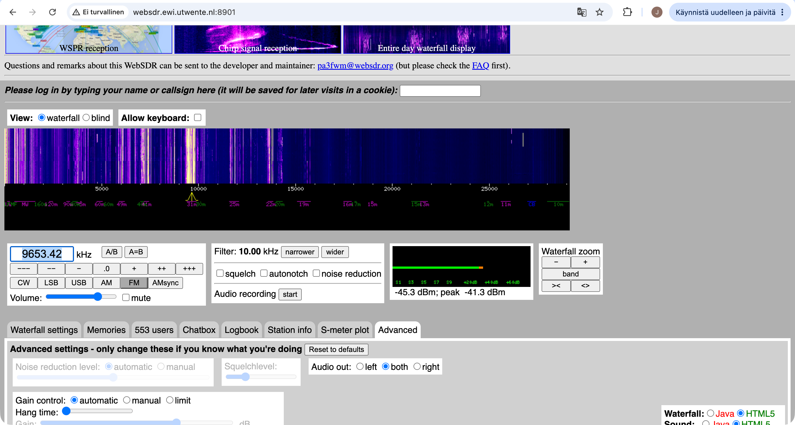
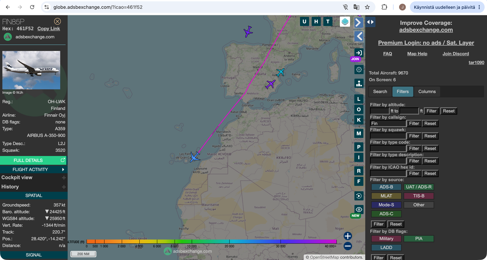

Googlasin WebSDR ja klikkasin ensimmäistä tulosta.
Valitsin ensimmäisen vastaanottimen, joka oli WebSDR at the University of Twente, Enschede, NL.
Valitsin amplitudimodulaation (AM) ja ryhdyin haravoimaan taajuksia. Taajudella 6070.0 kHz alkoi kuulua musiikkia, joskin lähetys oli melkoista rätinää ja signaali katkeili.

Aallonpituudeksi laskin Suomen Radioamatööriliiton sivuilta löytämälläni kaavalla: 300 000 (km/s) / 6070 kHz ≈ 49,4 m, jossa 300 000 km/s on valon nopeuden vakio.
Vaihdoin LSB-modulaatioon ja haravoin taas taajuuksia. Taajuudella 7070 kHz alkoi kuulua puhetta. Lähetyksen löytäminen vaikutti olevan selvästi vaikeampaa kuin amplitudimodulaation tapauksessa.

Valitsin seurattavaksi lentokoneeksi Finnairin Airbus A-350-900 -matkustajakoneen, jonka rekisteritunnus on OH-LWK. Kone oli lähtenyt Helsinki-Vantaalta kello 7.30 kohti Gran Canariaa ja oli juuri laskeutumassa. Sen maanopeus oli 357 solmua eli noin 661 km/h ja lentokorkeus noin 7,5 km.
Tiedot on saatu ADS-B -lähettimen avulla. Lentokoneessa oleva lähetin välittää maa-asemalle muun muassa koneen GPS-sijainnin, lentokorkeuden ja maanopeuden (FAA 2025).
